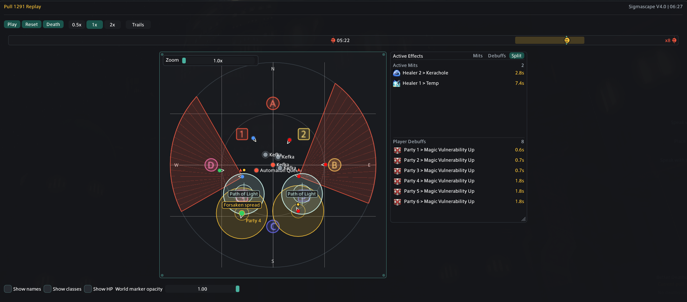

Navigate the pull
Play or pause, scrub the timeline, and zoom or pan the arena. The selected death gives you a useful starting point, but the replay covers the recorded pull.
Replay
BetaReplay uses captured positions, waymarks, statuses, and mechanic data to rebuild the attempt on a timeline.
Play or pause, scrub the timeline, and zoom or pan the arena. The selected death gives you a useful starting point, but the replay covers the recorded pull.
Show HP opens the resizable Party HP window with job icon, name, HP percentage, and shields. The window updates with replay time.
The resizable effects window can show Mitigations, Debuffs, or a split view. Timed effects count down and disappear when their captured duration ends.
Drag an arena corner to set the replay size. The chosen size is saved. The canvas and status panels keep separate stored sizes.
Use the Zoom slider or mouse wheel over the arena. While zoomed in, drag the arena to pan. Returning to 1x recenters it.
Click a player token to keep that actor's label visible. Click empty arena space to clear the focus.
Show names respects Name Redaction. Show classes adds job abbreviations. World marker opacity changes A/B/C/D and 1/2/3/4 visibility.

Supported encounters receive richer mechanic drawings. General replay still uses the data your client captured, but it may not know a mechanic's exact name or shape. Older pulls cannot gain fields that were not recorded when they happened.